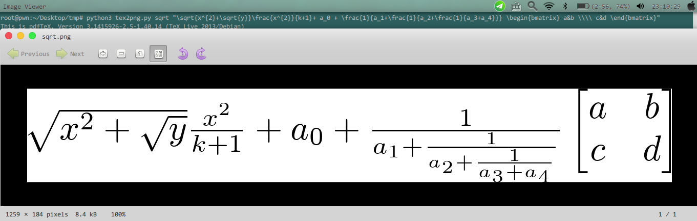

实际上就是借助Python3调用了几个TeX命令.平台为Linux,要求安装TeX.使用命令如下:
tex2png.py fname late_math_equation_without_$
第一个参数为图像文件名,第二个为LaTex数学公式,没有$符号,且需要以双引号括起.
示例用法如下:
python3 tex2png.py sqrt "\sqrt{x^{2}+\sqrt{y}}\frac{x^{2}}{k+1}+ a_0 + \
\frac{1}{a_1+\frac{1}{a_2+\frac{1}{a_3+a_4}}} \begin{bmatrix} a&b \\\\ c&d \end{bmatrix}"
将生成如下图片:

代码如下:
#! /usr/bin/python3
# -*- coding:utf-8 -*-
#ex:
#python3 tex2png.py sqrt "\sqrt{x^{2}+\sqrt{y}}\frac{x^{2}}{k+1}+ a_0 + \frac{1}{a_1+\frac{1}{a_2+\frac{1}{a_3+a_4}}} \begin{bmatrix} a&b \\\\ c&d \end{bmatrix}"
import os
import sys
pkg=r"\documentclass{article} \usepackage{amsmath} \usepackage{fullpage} \usepackage{amssymb} \usepackage{latexsym} \pagestyle{empty} "
beg=r"\begin{document}"
end=r"\end{document}"
if(len(sys.argv)<=1):
print("Please input name and the LaTex Equation!")
elif(len(sys.argv)==3):
fname,equation=sys.argv[1],sys.argv[2] #文件名和LaTex数学公式
texfile=pkg+beg+"$"+equation+"$"+end
with open(fname+".tex","w+",encoding="utf-8") as f:
f.write(texfile)
os.system("latex "+fname+".tex")
os.system("dvipng "+fname+".dvi -T tight -x 5000 -o "+fname+".png")
#下面的是透明背景色
#os.system("dvipng "+fname+".dvi -T tight -x 5000 -bg transparent -o "+fname+".png")
os.system("rm "+fname+".tex "+fname+".aux "+fname+".dvi "+fname+".log")
else:
print("Usage:tex2png.py fname late_math_equation_without_$")
本博客不设置评论功能.如有问题可以通过我的邮箱dXAyZ2Vla0AxNjMuY29tCg==或者新浪微博:bugnofree联系我.